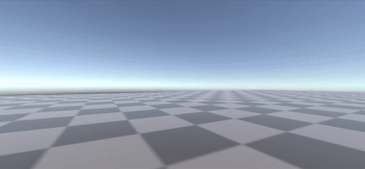

The brief:
For this project, we needed to create an interactive experience that would meet one of five target audiences. Our group settled on "School groups", as our project encourages trust and collaborative work. This is because our project was a game that would take two people, one with a VR headset on, and another person with the controllers.
Researching and brainstorming:
Initially we planned to have an educative experience focused around teaching the player how to build a PC. Originally we were thinking that we would do something similar to the game "Keep Talking And Nobody Explodes", where there would be a second player with a manual. This player would have to instruct the first player on what parts have to go in, in what order and where in the PC. The task would be timed as well to provide challenge. However, the concept of a VR PC building experience already existed in multiple forms, so we scrapped the idea in favour of something more original. At this stage, we were committed to the asymmetrical VR idea, and thus returned to the drawing board.
Our next idea was to make a maze game, with a randomly generated path each time. One player would once again have a VR headset. However in this situation, the other player without the headset would instead have the controllers. This would mean that the player with the headset would have to guide the "blind" player, hence the name "Split Senses". The goal would be to guide the player with the controllers along a maze made of platforms which is suspended above a pit of spikes. The game would require clear communication and would encourage collaboration between players to reach the end of the maze.
Development process:
First, I needed to do research onto how to make a VR project. I initially started by trying to run the VR template, to no avail. Upon having issues with building the project, I decided to start over with a blank project, following a guide on how to set up a project for VR in unity. Once again, I couldn't build the project. Upon proper inspection of the errors that were being spat back at me, I noticed that the problem seemed to lie in android.
Inspecting the file paths for the files which were causing errors made me realise that it was because of android studio which I had installed for the previous project. Because of this I had to uninstall android studio from my PC, which somehow made the project build correctly. With this issue resolved it allowed me to continue development of my section of the project. First I implemented controls. I was able to reuse the code from a demonstration of how the controls would work that had been made by myself a few weeks previously.
With this in place, I then started focusing on implementing gravity and collisions. This was a simple matter of giving the player a box collider and a rigidbody with rotation turned off, to prevent any issues with the camera falling over which would disrupt the controls.
Alongside this, I was periodically making sure to merge code with my fellow devs, using GitHub, which I had never used before. This allowed me the chance to learn how to use GitHub for collaborative coding and working with others on a single group.

The final outcome:
The project was properly merged allowing us to have a fully working game, that would generate a path. If given the opportunity to remake this project, it would have been ideal to have started with the project on GitHub rather than starting partway through.